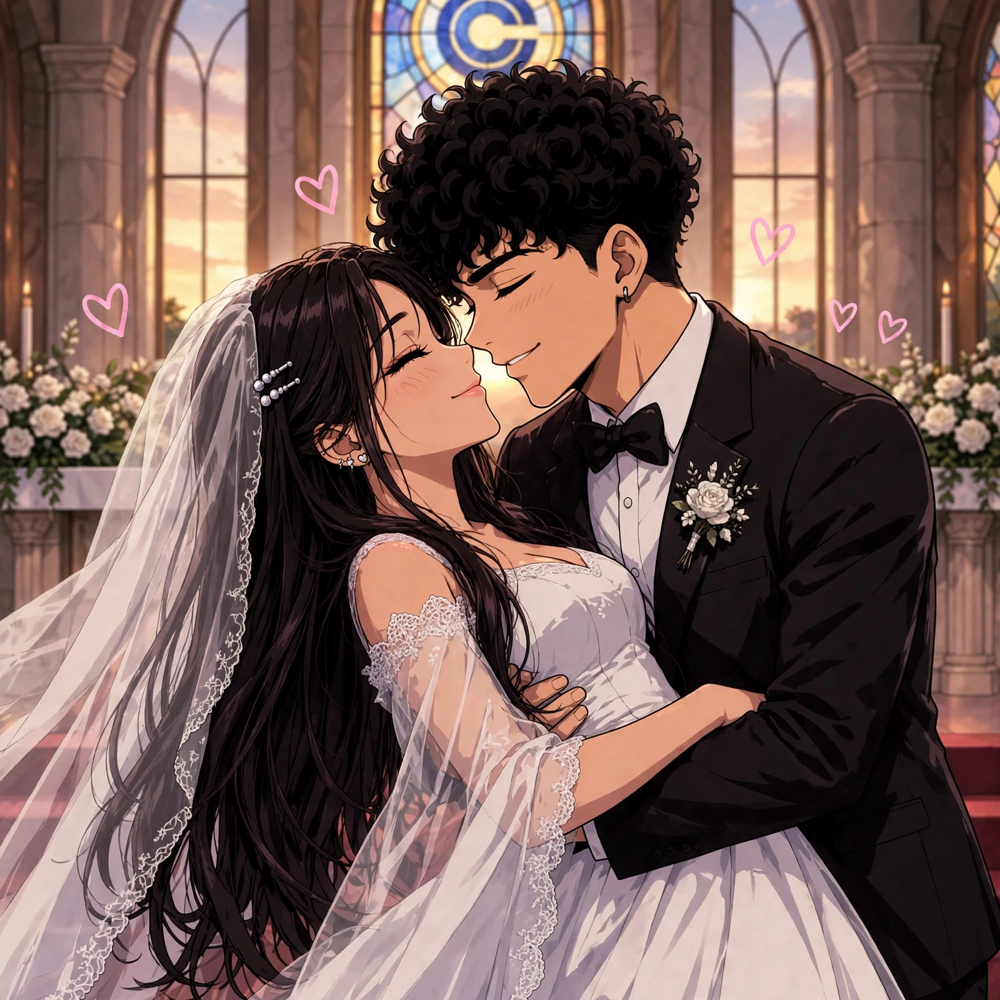

DRAGON BALL
Até Você Voltar ❤️

Uma história de amizade, amor, saudade e grandes aventuras.
No universo dos Guerreiros Z, Luana vive dias especiais ao lado dos personagens de Dragon Ball. Mas uma ausência inesperada muda a rotina do grupo...
Uma história com reencontros, segredos, surpresas e um pedido que pode transformar tudo.
Vinte capítulos. Muitas conversas. Uma história que ninguém vai esquecer.
A trilha sonora começa junto com a aventura 🎶
NOSSO FELIZES PARA SEMPRE 💍
O começo de uma nova aventura ❤️

Depois de tantas conversas, aventuras, saudades e reencontros, chegou o dia de celebrar o amor de Luana e Richard.
Cada fotografia guarda um pedacinho desse sonho. E cada pessoa que esteve nessa jornada faz parte dessa lembrança.
Nosso álbum de casamento 📸
“Entre tantas batalhas, viagens e aventuras, a melhor parte da nossa história foi encontrar um ao outro. Que a vida continue sendo nossa aventura favorita, que nunca faltem motivos para sorrir e que o nosso amor seja sempre o nosso lugar seguro. Que esse seja apenas o primeiro de muitos capítulos juntos.” ❤️
E, Richard... espero viver tudo isso de verdade um dia. Espero seu pedido na vida real. 💍🥹
E, Richard... espero viver tudo isso de verdade um dia. Espero seu pedido na vida real. 💍🥹